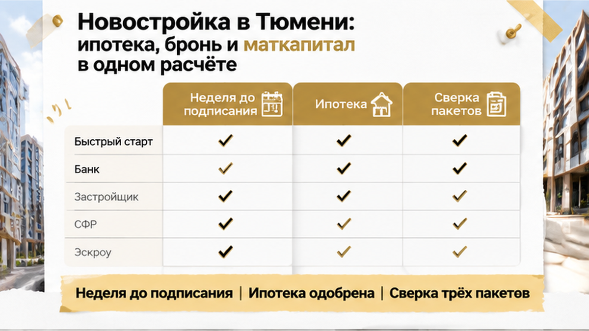
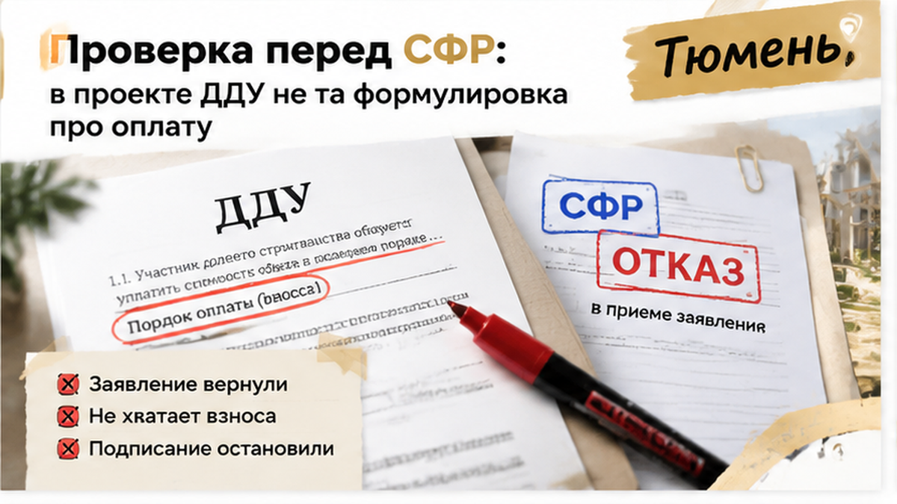
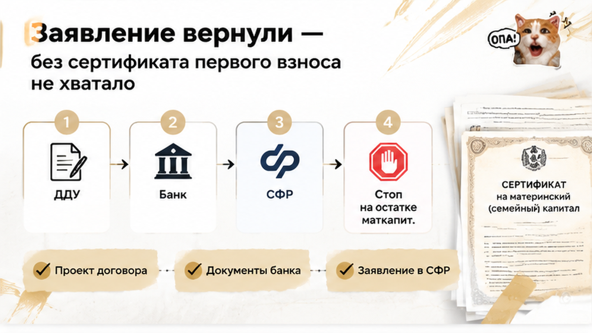
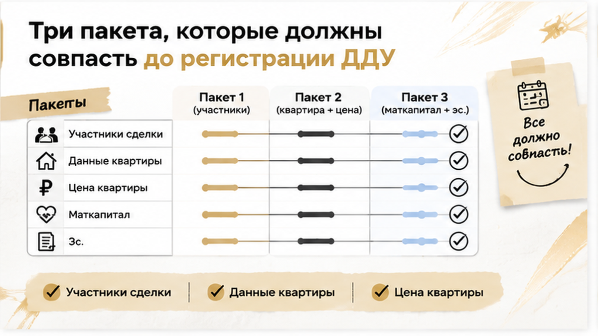
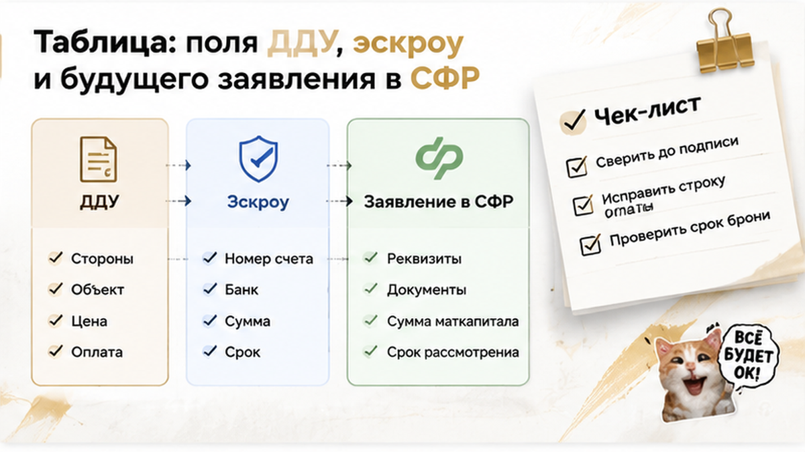

За 7 дней до подписания договора на новостройку в Тюмени семья выяснила: маткапитал, без которого не собрать первый взнос, может не пройти из-за одной строки. Квартиру уже забронировали, ипотеку одобрили, банк и менеджер застройщика считали документы готовыми. Но в проекте договора и бумагах на оплату одни и те же деньги оказались описаны по-разному. Супруги рассчитывали добавить сертификат к своим накоплениям, а заменить его собственными деньгами было нечем. Подписание пришлось остановить: сначала исправленный договор, потом обязательства на годы.
Я Святослав Шакин, The Риэлтор, Тюмень. Разбираю новостройки не по красивому одобрению банка, а по тому, сойдутся ли ДДУ, эскроу и заявление на маткапитал в одной логике оплаты. Смотреть разборы и задать вопрос можно в Telegram и MAX.
У семьи двое детей, и маткапитал в этой покупке был частью первого взноса. Убрать его из расчёта и продолжить сделку на прежних условиях не получалось. Поэтому вопрос был вполне приземлённый: получится ли оплатить выбранную квартиру теми деньгами, на которые супруги рассчитывали?
Здесь легко принять размер государственной выплаты за сумму, которая доступна именно вам. Ориентир на 2026 год — 728 921,90 рубля на первого ребёнка и 963 243,17 рубля на второго, если право раньше не возникало. Но наличие двух детей само по себе не означает, что на сертификате лежит вся вторая сумма. Для покупки нужен фактический остаток по сведениям Социального фонда России — СФР: именно его можно закладывать в оплату.
Квартиру покупали по договору долевого участия — ДДУ, с ипотекой и расчётом через эскроу. Семья видит одну покупку, но документы для неё готовят разные участники. Банк описывает кредит и первый взнос, застройщик — оплату квартиры, а в заявлении на маткапитал нужно указать, куда и на каком основании направляются средства. Эти описания должны сходиться между собой, иначе общего «всё одобрено» недостаточно.

Супруги запросили сверку проекта ДДУ, документов по ипотеке и эскроу, а также черновика заявления на распоряжение маткапиталом. По отдельности каждый комплект мог выглядеть рабочим. Расхождение стало видно, когда их сопоставили: в договоре использование маткапитала не было ясно связано с порядком оплаты, а назначение платежа отличалось от того, которое собирались указать в заявлении.
Для покупателя это выглядит как спор о словах: квартира та же, сумма та же, платить собирается та же семья. Но строка об оплате объясняет, какие деньги идут в счёт квартиры и каким путём. Если документы отвечают на этот вопрос по-разному, уверенность менеджера расхождение не устраняет. Почему формулировку нельзя считать пустяком, разбирал в материале про неверную формулировку в ДДУ.
На этом этапе зарегистрированного ДДУ ещё не было, как не было и окончательного отказа СФР. При предварительной проверке обнаружили несоответствие, которое могло помешать перечислению. Это существенная разница: право на маткапитал у семьи не исчезло, но готовность документов к подписанию оказалась под вопросом.
Времени на исправление тоже не было сколько угодно. У брони свой срок, у ипотечного одобрения — свой, и правка договора сама по себе их не продлевает. Как быстро меняется положение покупателя перед подписанием, видно и в разборе стопа за два дня до ДДУ. Здесь требовалось выяснить, какую именно строку менять и успеют ли заново согласовать документы.

В строке про оплату маткапитал не был ясно связан с перечислением на эскроу. Между тем в кредитном пакете и черновике заявления эти деньги уже занимали своё место: без них первый взнос не собирался. Получалось, что квартиру семья покупает одну, а документы описывают расчёт за неё по-разному.
«Но банк же всё одобрил». Для покупателя это весомый довод: доход проверили, кредит согласовали, можно готовиться к подписанию. Только одобрение ипотеки не отвечает на другой вопрос — совпадает ли порядок использования маткапитала в договоре с тем, что семья собирается указать в заявлении. Банк проверяет свою часть сделки, а семье нужен работающий расчёт целиком.
Здесь нельзя было отделаться обещанием «потом уточним». После регистрации исправление договора потребует дополнительных действий: допсоглашения и повторной передачи сведений. Пока перед семьёй лежал проект, оставалась возможность согласовать текст до подписи и до перевода собственных денег.
С самим счётом тоже разбираются отдельно. Правильная строка об оплате не заменяет проверки его реквизитов и открытия: в истории о несостоявшемся открытии эскроу сделка остановилась на другом участке. Поэтому фраза «с ипотекой всё хорошо» ещё не означает, что путь денег проверен до конца.

Здесь важно точно назвать, на чём остановилась история. До подписания обнаружили расхождение и предупредили, что заявление могут вернуть: окончательного отказа СФР по зарегистрированному ДДУ в описанном случае не было. Семья не потеряла право на маткапитал, но и считать эти деньги уже согласованной оплатой было нельзя.
Подписание остановили, у застройщика запросили исправленный проект, собственные деньги переводить не стали. Это и есть развязка на этом этапе. Подтверждённого перечисления маткапитала или завершённой покупки в истории нет; есть решение не подписывать договор, по которому без выплаты не хватало первого взноса.
Пауза тоже имела цену: бронь ограничена по времени, ипотечное одобрение не бессрочно. Правка договора сама по себе не продлевает ни то ни другое. Поэтому вместе с новой редакцией семье требовалось заново согласовать календарь сделки, а не просто ждать, когда пришлют документ с заменённой строкой.
Если СФР завернул маткапитал на новостройку из-за одной строки в ДДУ, вы бы успели переписать договор до брони или отказались бы от объекта?

Практический смысл этой проверки простой: положить рядом договор с застройщиком, документы банка и будущую заявку на маткапитал. В каждом должна читаться одна покупка — та же квартира, та же цена и понятное распределение денег. Сколько вносит семья, сколько даёт банк и сколько предполагается направить из сертификата: ни одна часть не должна существовать только в устном объяснении менеджера.
Сумму маткапитала берут из сведений СФР о фактическом остатке. Если часть уже использовали, полный размер выплаты не закроет недостающее место в расчёте. Федеральную выплату также нельзя смешивать с региональной поддержкой Тюменской области: это разные деньги с разными правилами, даже если семья рассчитывает использовать обе меры для покупки жилья.
Реквизиты заслуживают такой же внимательной сверки, как цена квартиры. Номер счёта, банк и сведения о застройщике должны соответствовать выбранной схеме оплаты. Что происходит, когда в документах появляется чужое юридическое лицо, показано в разборе остановки сделки из-за реквизитов эскроу.
Чтобы не ходить по кругу между банком и застройщиком, расхождения удобно собрать в одном месте. Такая сверка помогает задать конкретный вопрос по конкретному полю. Она не заменяет решения СФР: распоряжение маткапиталом при этой покупке опирается на зарегистрированный ДДУ.
| Что сверить | В ДДУ | В документах банка и эскроу | В будущем заявлении в СФР |
|---|---|---|---|
| Участники | ФИО и данные покупателей | Заёмщики и плательщики | Заявитель и сведения о семье |
| Квартира | Застройщик, адрес, номер, площадь | Объект, на который выдают кредит | Жильё, на которое направляют выплату |
| Цена и источники денег | Стоимость и порядок оплаты | Кредит и собственные средства | Стоимость жилья и сумма маткапитала |
| Маткапитал | Его место в оплате квартиры | Порядок внесения и перечисления | Сумма с учётом остатка сертификата |
| Платёж и эскроу | Как деньги поступают в оплату | Назначение платежа и реквизиты счёта | Сведения, связывающие выплату с этой сделкой |
В календаре оставляют время и на решение фонда. После регистрации ДДУ рассмотрение заявления обычно занимает до пяти рабочих дней, при межведомственных запросах — до двенадцати. После положительного решения на перечисление отводится ещё до пяти рабочих дней; регистрация договора и работа банка в эти сроки не входят.
Есть и обязательства, которые останутся после покупки. Жильё с маткапиталом оформляют в общую долевую собственность родителей и детей, а при определении долей учитывают использованную сумму и стоимость жилья. Если ДДУ расторгнут, маткапитал с эскроу возвращается в СФР и право на средства восстанавливается — на новую покупку их оформляют отдельно.
До оплаты брони можно спокойно сопоставить проект ДДУ, пакет банка и черновик заявления на маткапитал. Напишите мне в Telegram или MAX: начнём со сверки строк об оплате, а не с обещания «всё сходится».

Когда квартира уже выбрана, перенос подписи легко принять за шаг назад. Но дата в календаре не добавит недостающих денег и не исправит договор. Пока средства у семьи, у неё остаётся возможность потребовать ясный порядок оплаты и принимать решение по документам.
Я подключаюсь к покупке новостройки до брони, когда ещё можно сопоставить условия банка, застройщика и использование сертификата без спешки. Задача — понять, сходится ли ваша покупка по деньгам и срокам, прежде чем вы начнёте за неё платить. Один вечер на сверку трёх пакетов документов обычно дешевле, чем перенос подписания и спор о возврате брони.
Материал не заменяет индивидуальную юридическую консультацию.